遍历二叉树
- 遍历：顺着某一条搜索路径巡访二叉树中的结点，使每个结点均被访问[各种处理，如：输出结点信息，修改结点数据值，但不能破坏原来的数据结构（不插入删除）]一次，且仅被访问一次（周游）
- 目的：得到树中所有结点的一个线性排列
- 遍历方法：
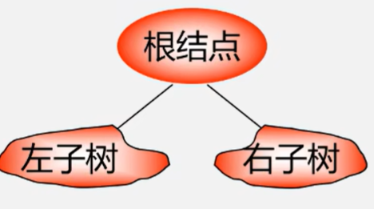
L：遍历左子树 D：访问根结点 R：遍历右子树
若先左后右：
DLR：先（根）序遍历
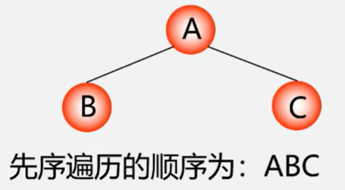
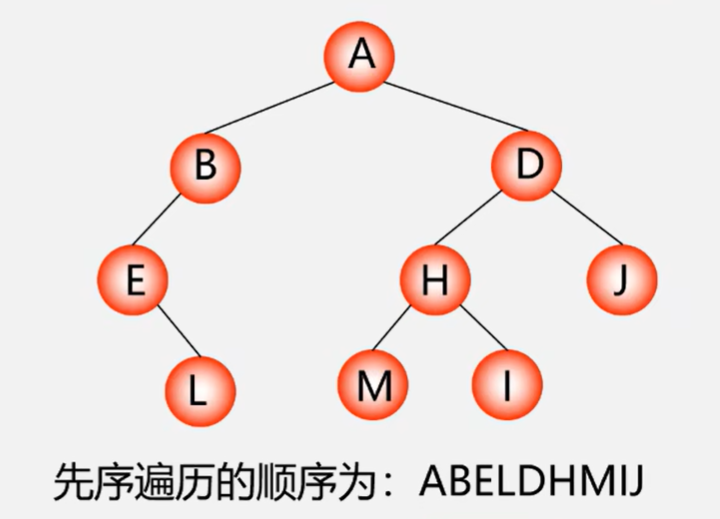
LDR：中（根）序遍历
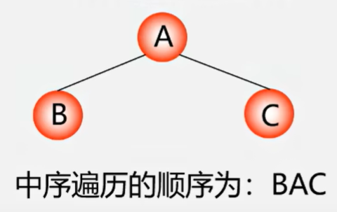
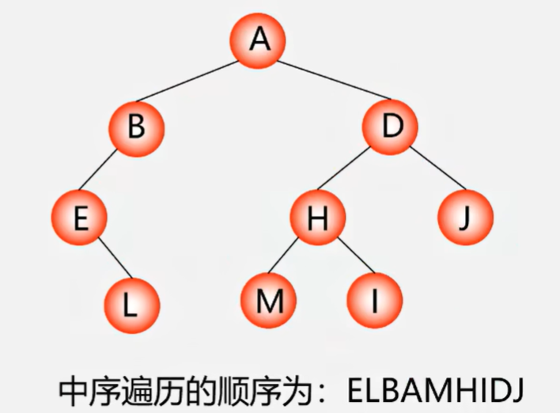
LRD：后（根）序遍历
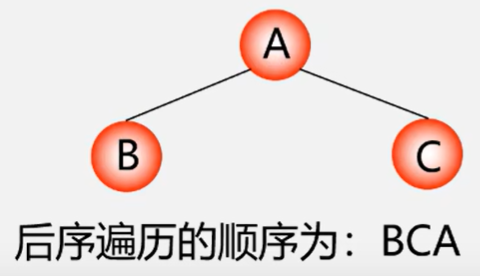
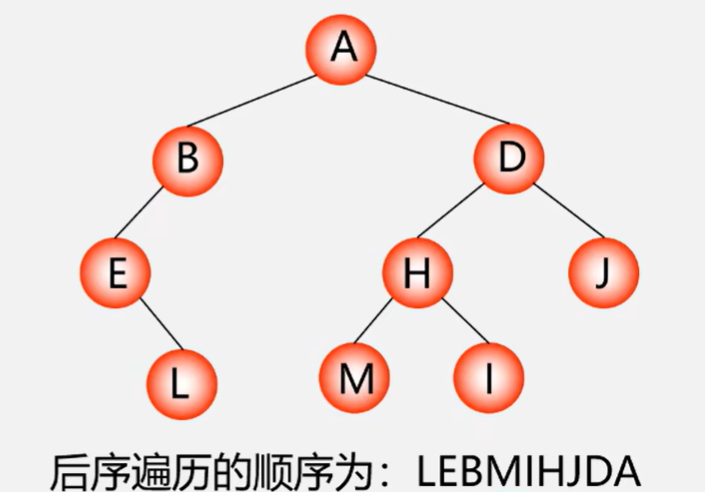
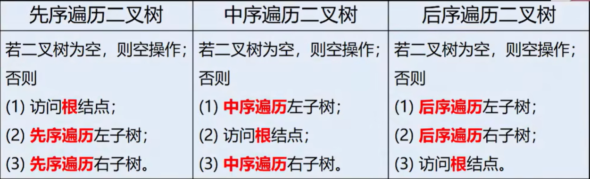
一样递归遍历左右子树
根据遍历系列确定二叉树[先找到最左的]
- 二叉树各结点的值均不相同：二叉树结点的先序、中序、后序序列都是唯一的
- 由二叉树的先序、中序序列，或中序、后序序列可以确定唯一二叉树（只有先后不可以）
- 已知先序、中序：
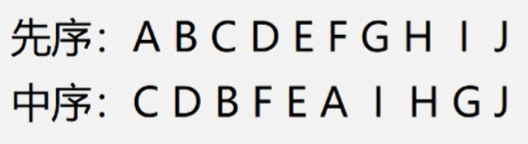
先序--根，中序--左右子树
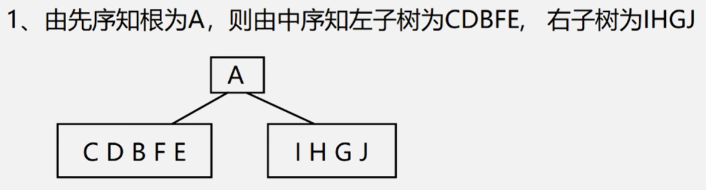
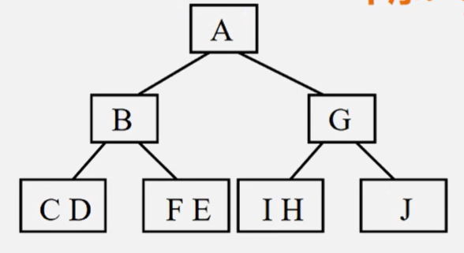
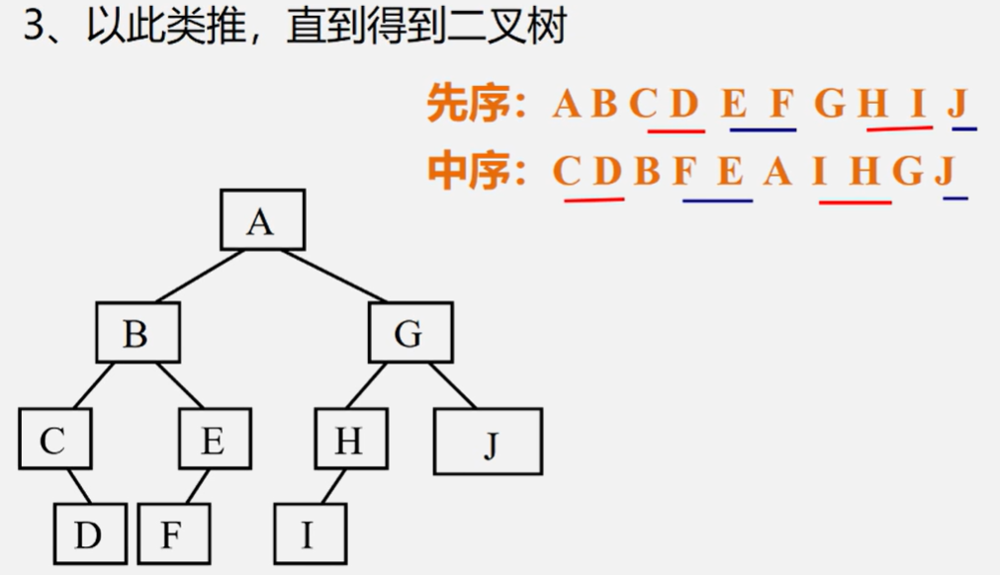
- 中序、后序：
后序---根在尾部，中序---左右子树
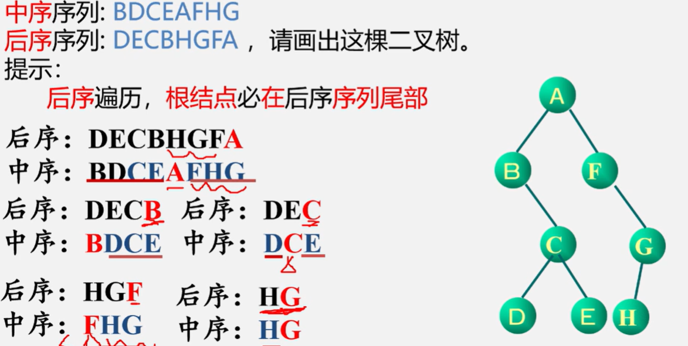
算法实现
- 先序遍历：
若空：空操作
非空：访问根结点（D）先序遍历左子树（L）先序遍历右子树（R）
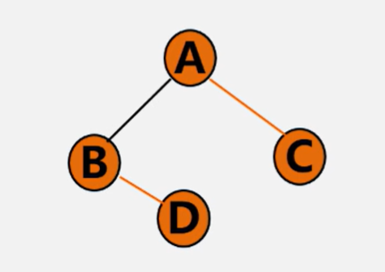
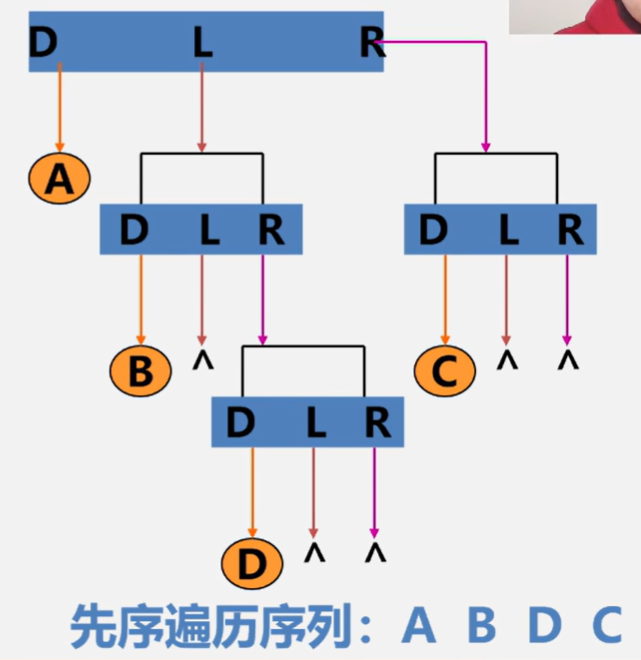
Status PreOrderTraverse(BiTree T){
if(T==NULL)return OK;//空二叉树
else{
visit(T);//访问根结点
PreOrderTraverse(T->lchild);//递归遍历左子树
PreOrderTraverse(T->rchild);//递归遍历右子树
}
} void Pre(BiTree *T){
if(T!=NULL){
cout<<T->data;
Pre(T->lchild);
Pre(T->rchild);
}
}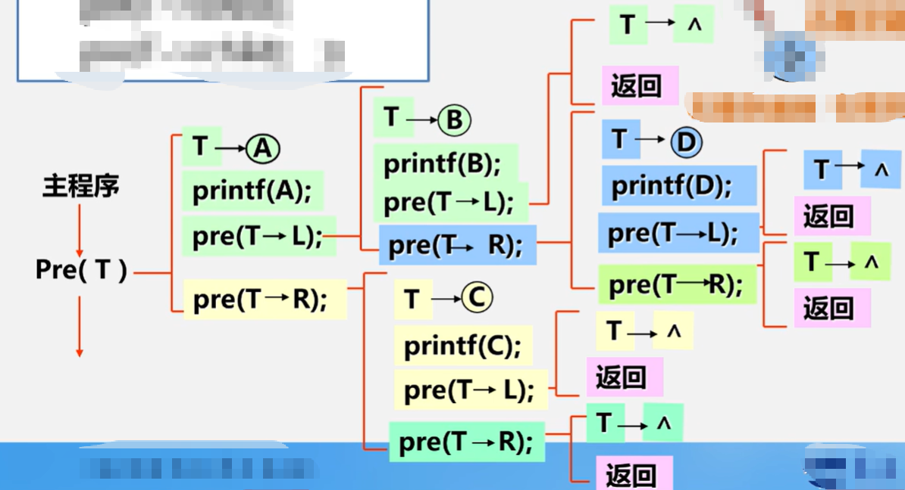
- 中序遍历
若空：空操作
非空：先序遍历左子树（L）访问根结点（D）先序遍历右子树（R）
Status InOrderTraverse(BiTree T){
if(T==NULL)return OK;//空二叉树
else{
InOrderTraverse(T->lchild);//递归遍历左子树
visit(T);//访问根结点
InOrderTraverse(T->rchild);//递归遍历右子树
}
}- 后序遍历
若空：空操作
非空：先序遍历左子树（L）先序遍历右子树（R）访问根结点（D）
Status PostOrderTraverse(BiTree T){
if(T==NULL)return OK;//空二叉树
else{
PostOrderTraverse(T->lchild);//递归遍历左子树
PostOrderTraverse(T->rchild);//递归遍历右子树
visit(T);//访问根结点
}
}- 分析
去掉输出语句：递归角度，三种算法完全相同/访问路径相同，只是访问结点的时机不同
每个结点经过三次：
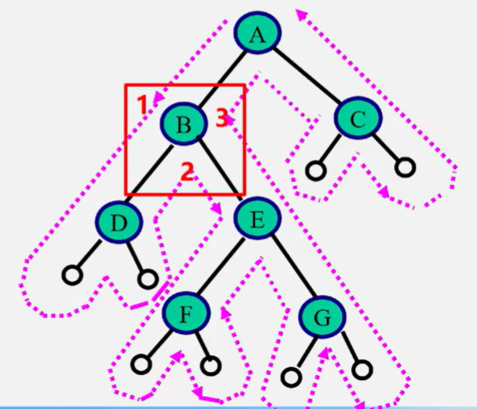
第一次经过时访问：先序
第二次经过时访问：中序
第三次经过时访问：后序
时间复杂度：O（n） 每个结点只访问一次
空间复杂度：O（n） 栈占用的最大辅助空间
非递归算法
中序遍历非递归算法
关键：在中序遍历过某结点的整个左子树后，如何找到该结点的根以及右子树。
基本思想:
- 建立一个栈
- 根结点进栈，遍历左子树
- 根结点出栈，输出根结点，遍历右子树。
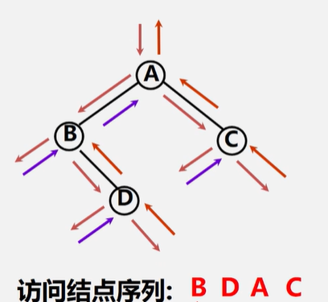
Status InOrderTraverse(BiTree T){
BiTree p;InitStack(S); p=T;
while(p||!StackEmpty(S)){
if(p){Push(S,p); p=p->lchild;}
else {Pop(S,q); cout<<q->data; p=q->rchild;}
return OK;
}
}二叉树的层次遍历
对于一颗二叉树，从根结点开始，按从上到下、从左到右的顺序访问每一个结点。 每一个结点仅仅访问一次。
算法设计思路：使用一个队列
- 将根结点进队
- 队不空时循环：从队列中出列一个结点*p，访问它; * 若它有左孩子结点，将左孩子结点进队; * 若它有右孩子结点，将右孩子结点进队。
队列类型定义：
typedef struct{
BTNode data[MAXSIZE];//存放队中元素
int front,rear;//队头和队尾指针
}SqQueue;//顺序循环队列类型层次遍历算法：
void LevelOrder(BTNode *b){
BTNode *p; SqQueue *qu;
InitQueue(qu);//初始化队列
enQueue(qu,b);//根结点指针进入队列
while(!QueueEmpty(qu)){//队不为空，则循环
deQueue(qu,p);//出队结点p
cout<<p->data;//访问结点p
if(p->lchild!=NULL)enQueue(qu,p->lchild);//有左孩子时将其进队
if(p->rchild!=NULL)enQueue(qu,p->rchild);//有右孩子时将其进队
}
}二叉树遍历算法的应用——二叉树的建立
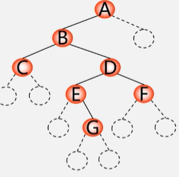
先序遍历：ABC##DE#G##F###
Status CreateBiTree(BiTree &T){
cin>>ch;
if(ch=="#") T=NULL;//空字符
else{
if(!(T=(BiTNode *)malloc(sizeof(BiTNode))))
T=new BiTNode;
T->data=ch;//生成根结点
CreateBiTree(T->lchild);//构造左子树
CreateBiTree(T->rchild);//构造右子树
}
return OK;
}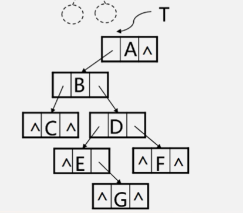
二叉树遍历算法的应用——复制二叉树
- 空树：递归结束
- 否则，申请新结点空间，复制根结点 * 递归复制左子树 * 递归复制右子树
int Copy(BiTree T,BiTree &NewT){
if(T==NULL){//如果是空树，返回0
NewT=NULL;
return 0;
}
else{
NewT=new BiTNode;
NewT->data=T->data;
Copy(T->lchild,NewT->lchild);
Copy(T->rchild,NewT->rchild);
}
}递归：某一层调用（离开，深入到下一层）完了（返回），回到上一层
二叉树遍历算法的应用——计算二叉树的深度
- 空树：深度为0
- 否则：递归计算左子树的深度为m
递归计算右子树的深度为n
二叉树的深度为 max{m,n}+1
int Depth(BiTree T){
if(T=NULL) return 0; //空树：返回0
else{
m=Depth(T->lchild);
n=Depth(T->rchild);
if(m>n) return(m+1);
else return(n+1);
}
}二叉树遍历算法的应用——计算二叉树的结点总数
- 空树：结点个数=0
- 否则：结点个数=左子树的结点个数+右子树的结点个数+1
int NodeCount(BiTree T){
if(T==NULL) return 0;
else return NodeCount(T->lchild)+NodeCount(T->rchild)+1;
}二叉树遍历算法的应用——计算二叉树的叶子结点数
- 空树：结点个数=0
- 否则：结点个数=左子树的结点个数+右子树的结点个数
int LeadCount(BiTree){
if(T==NULL) return 0;//空树：返回0
if(T->lchild==NULL&&T->rchild==NULL)return 1;//叶子节点：返回1
else return LeafCount(T->lchild)+LeafCount(T->rchild);
}